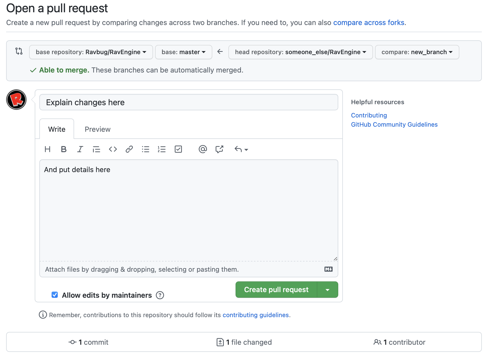
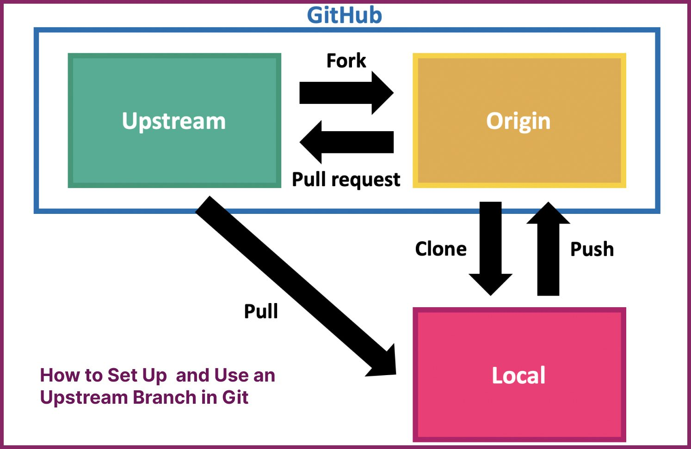
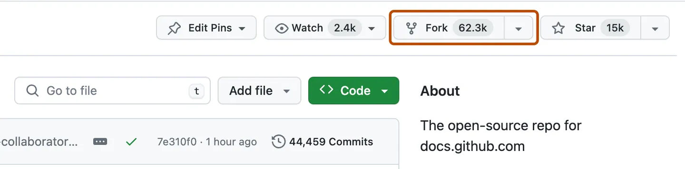
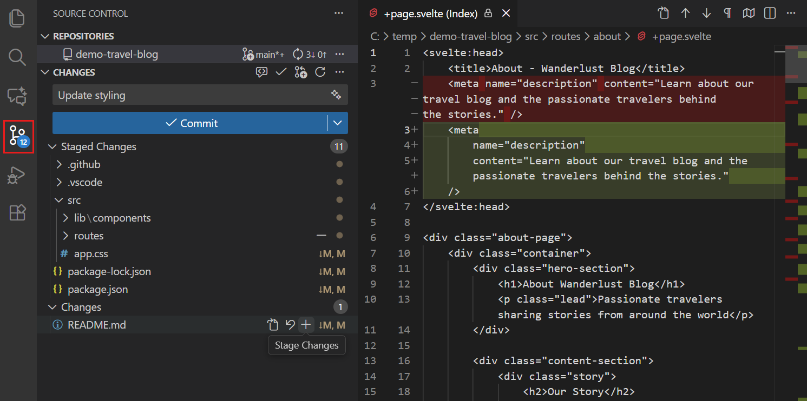
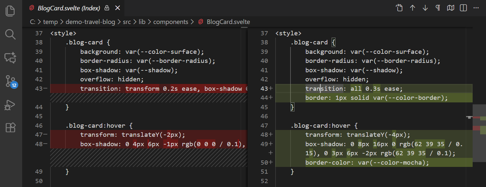
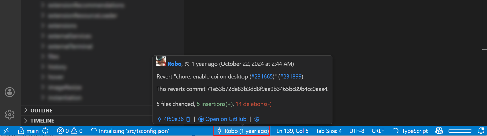
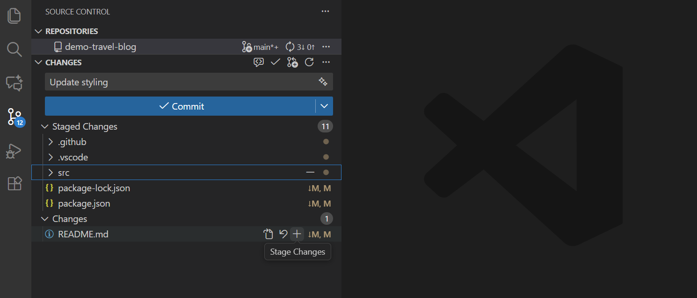
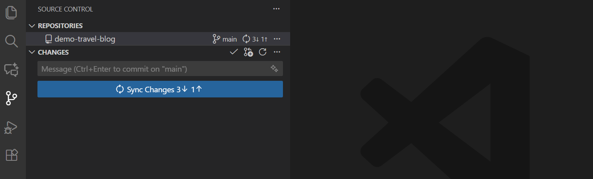
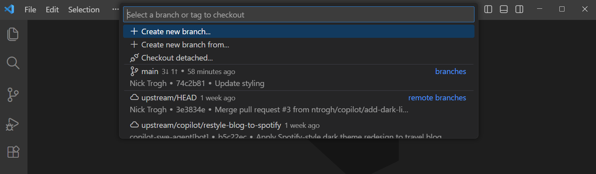

Git Basics and Source Control in VS Code
Why Git?
- Git tracks changes to your files over time
- It helps you safely experiment without losing working code
- It makes teamwork easier by combining work from multiple people
- It gives you a history you can inspect, compare, and restore
- It supports both command-line and editor workflows
Setup Git
Windows
- Install Git from git-scm.com/download/win
- Keep default options if you are unsure
- Open Git Bash and verify:
macOS
- Install Xcode Command Line Tools:
- Or install from git-scm.com/download/mac
- Verify:
Linux
- Use your package manager:
First-Time Git Configuration
Set your identity once (used in commit history):
Scenario 1: Regular Commits
Initialize a folder as a git repository:
Make a change, stage it, and save it locally:
Repeat for another change:
Followed by a push to remote repository:
Remember to submit your work.
Scenario 2: Feature Branches
- Feature branching is helpful for teamwork to not step on eachothers’ toes.
- Usually multiple commits are done on a separate branch, then merged into main
Scenario 2.A: Merge
Scenario 2.B: Open Pull Request (PR)
- Navigate to your repository on the web platform.
- You will usually see a prompt: “Compare & pull request.”
- Ensure the base branch is main and the compare branch is your feature branch.
- Add a title and description explaining what you changed and why.
- Click Create Pull Request.
Figure: Open a Pull Request

Scenario 3: Pull Content Updates
- Bootcamp content is served on GitHub
- You are required to fork it; i.e., create a clone that points to it
- The original repo is called the upstream
Image showing upstream in context

Scenario 3: Pull Content Updates (The Process)
When we update the upstream, you can pull the changes.
- Fork the GitHub repo HassanAlgoz/B5
- Clone your own fork
- Setup the upstream (register another source for pulling changes from)
- Ask for the latest updates from that source.
- Merge those updates into your current files.
Figure: The Fork Button

Scenario 3: Pull Content Updates (Git Commands)
Connect to the original repository (only needs to be done once):
Bring the latest changes into your local machine:
Alternatively, to do it in one step:
Learn to Resolve merge conflicts in VS Code.
Source Control in VS Code: Key Elements
Visual Studio Code includes built-in source control management (SCM) for Git. The Source Control UI lets you stage files, commit changes, create branches, sync remotes, and resolve conflicts without leaving the editor.
Press
Sto open speaker notes.
Source Control in VS Code: Source Control overview screenshot

Prerequisites
To use Git features in VS Code, you need:
- Git installed on your machine (2.0.0 or later)
- A configured Git username and email for commits
If you are new to Git, start with:
Get Started with a Repository
VS Code automatically detects Git repositories.
You can:
- Initialize a new repository
- Clone an existing repository
- Open a remote repository with the GitHub Repositories extension
- Publish a local repository to GitHub
Source Control Interface: Key Elements
Key interface elements:
- Source Control view (stage, commit, manage changes)
- Source Control Graph (history and branch relationships)
- Diff editor (side-by-side comparisons)
- UI indicators (gutter changes, blame info)
Source Control Interface: Source Control Graph

Source Control Interface: Diff editor

Source Control Interface: Git blame / UI indicators

Common Workflows: Review and Commit (Key Elements)
Before committing, review your changes for accuracy and quality.
In the Source Control view, stage files (or specific lines), write a commit message, and commit.
VS Code can also suggest AI-generated commit messages based on staged changes.
Common Workflows: Review and Commit (Staging changes)

Common Workflows: Sync, Merge, Branches, History (Key Elements)
- Sync status shows incoming/outgoing commits
- Resolve merge conflicts with inline tools or the 3-way merge editor
- Switch branches quickly; use worktrees and stashes for parallel work
- Use Source Control Graph and Timeline view to inspect history
Common Workflows: Sync (Incoming / outgoing changes)

Common Workflows: Merge conflicts (3-way merge editor)

Common Workflows: Branches (Switching branches)

Common Workflows: History (Timeline view for a file)

GitHub Pull Requests and Issues
Install the GitHub Pull Requests and Issues extension to:
- Create, review, and merge pull requests
- View and manage issues
- Comment on and approve PRs in VS Code
- Check out PR branches and review changes locally
Reference: Working with GitHub in VS Code.